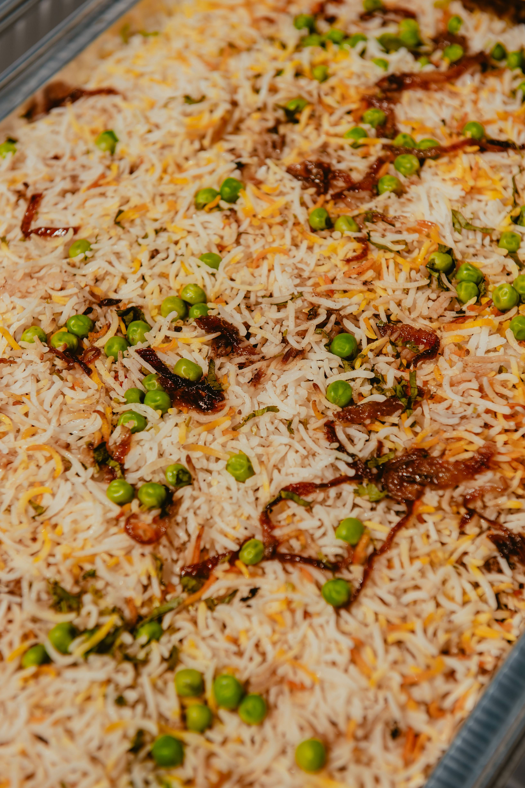

Systems &
Cloud Engineering.
Results-driven Software Engineer with 8 years of experience in designing and implementing high-quality cloud and web solutions. Expertise in Azure Fleet Resiliency, Cosmos DB, and Agentic AI workflows.
Active AI Repositories
Professional portfolio source code and system engineering documentation.
Automating Azure live-site incident investigations using autonomous agents.
REQUEST ACCESS (Recruiters/HR)Technical notes and projections for Agentic AI and System Engineering architecture.
REQUEST ACCESS (Recruiters/HR)Microsoft Projects (Quadrant Resources)
Azure SQL DB Capacity Management
April 2022 — Present | v-vdevaraju@microsoft.com | Team Size: 3Our project primarily focuses on data analysis and utilization across global regions. The main objective is to ensure minimal utilization percentages in all regions, thereby avoiding hot segments and potential issues with customer data. Data utilization is a crucial aspect that directly impacts business performance. It helps identify areas requiring more attention and resources. By maintaining minimal utilization percentages, we can effectively manage data and prevent problems arising from excessive data usage.
Value Adds & Major Milestones
Value Adds- Proactive Capacity Management: Played a central role in short-term planning, absorbing sudden demand spikes for service stability.
- Standardized Incident Triage: Streamlined investigation workflows by leveraging KQL, SQL, and IcM telemetry.
- Global Team Synergy: Reliable bridge between onshore and offshore teams for coordination on capacity planning.
- Executive Communication: Transformed technical data into professional incident updates and status reports.
- Process Automation: Identified repeat patterns and proposed automated, script-ready workflows.
- Operational AI Integration: Applying AI tools into daily operational workflows to boost team productivity.
- Service Reliability & MTTR: Accelerated incident resolution times and improved overall availability.
- Infrastructure Modernization: Successfully achieved 100% adoption of PaaSv2 ahead of projected timelines.
- Hardware Decommissioning: Fully decommissioned xxx of Gen3 & Gen4 hardware and achieved xxx return rate for Gen7.
- Customer Success: Drove Zonal onboarding progress for eligible S500 customers to xxx.
- Migrations: Successfully driving complex transitions (SPO to Gen8, QCS, MAZ).
- RDFE to PaaSv2 Conversion: Executed multi-year migration, sending xxxx rings to Decom within a 90-day window.
- RCS Workflow Automation: Engineered RCS automation with built-in validation and dynamic retry logic.
- Power BI: Developed an end-to-end dashboard using advanced DAX queries to track the ICM backlog and resolution counts.
- Resiliency & Configuration Rollouts: Implemented fallback settings and orchestrated timely deployment to safeguard availability.
Azure Cosmos DB
Dec 2019 — Sept 2021 | v-viddev@microsoft.com | Team Size: 9Microsoft's globally distributed database service. Involved in elastically scaling throughput and storage across geographic regions. Worked across separated teams for continuous integration, deployment, backup and restore, and dashboard modules.
Responsibilities & Modules
Module I: Dashboard- Developed a module to calculate total Azure Spend for subscriptions across environments.
- Worked on AAD Token integration and wrote unit test cases using Moq.
- Implemented MS-Flows for notification triggers related to Azure cost and exceptions.
- Involved in creating Azure Functions and managing deployment processes.
- Monitored pipelines in both Build and Test phases.
- Leveraged MS-Flows to send daily reports and automatically create IcMs for build failures.
- Directly interacted with clients for gathering new requirements.
- Wrote PowerShell scripts for disk cleanups and Windows updates in Azure file server and scale sets.
- Participated in Status meetings and maintained TSGs using .md files.
- Worked on Power BI reports for Incident Management tracking using complex KQL and DAX queries.
In-House Projects (2018 — 2019)
WATS Portal
Role: .NET Developer | .NET MVC 4.0, Bootstrap, SQL 2012Developed an Event Management System for Washington Telugu Samithi (WATA), streamlining the organization and ticketing process for events. The system enables users to seamlessly browse upcoming events, purchase tickets securely, and receive event-related updates. Implemented a user-friendly interface to enhance the overall user experience.
Responsibilities
- Participated in daily scrums with the project lead to meet requirements and deadlines.
- Developed, tested, debugged, and supported C# ASP.Net applications with MVC architecture.
- Designed the UI using HTML5, jQuery, and CSS.
- Created stored procedures for inserting, deleting, and updating data in SQL Server.
- Implemented Form-based Authentication for user login security.
- Created Database Design, complex Stored Procedures, Functions, and SQL joins.
Office Management Portal
Role: .NET Developer | .NET MVC 4.0, LINQ, SQL 2012Helps management track employee performance, maintenance, projects, and task assignments. Supports features like sending/receiving emails, leave requests, chatting with the team, and tracking reporting authorities (WHO) and billing details.
Responsibilities
- Participated in daily scrums with the project lead.
- Developed, tested, and debugged ASP.Net different internet browsers with MVC architecture.
- Designed the UI using HTML5, jQuery, and CSS.
- Created stored procedures for inserting, deleting, and updating screen data.
- Created Login Forms and implemented Form-based Authentication.
- Managed customer module for viewing billing details, payments, and dues.
- Created complex Stored Procedures, Functions, and SQL joins.
SRK Travels
Role: .NET Developer | .NET MVC 4.0, SQL 2012Tours & Travels Management System Transport solution to various districts and districts of the country. Refactored manual transport processes into an automated digital solution maintaining details of tours, employees, and customers.
Responsibilities
- Participated in daily scrums with the project lead.
- Developed, tested, and debugged C# ASP.Net with MVC architecture.
- Designed the UI using HTML5, jQuery, and CSS.
- Created stored procedures and complex T-SQL code for data integrity.
- Created Database Design and Created Tables according to requirements.
- Ensured secure authentication and organized SQL joins for large data sets.
Certification & Declaration
AZ-204: Developing Solutions for Microsoft Azure (Issued 2020)
"I hereby declare that all the details mentioned above are true to the best of my knowledge and ability."
Interests

Culinary Arts
Carnatic Music